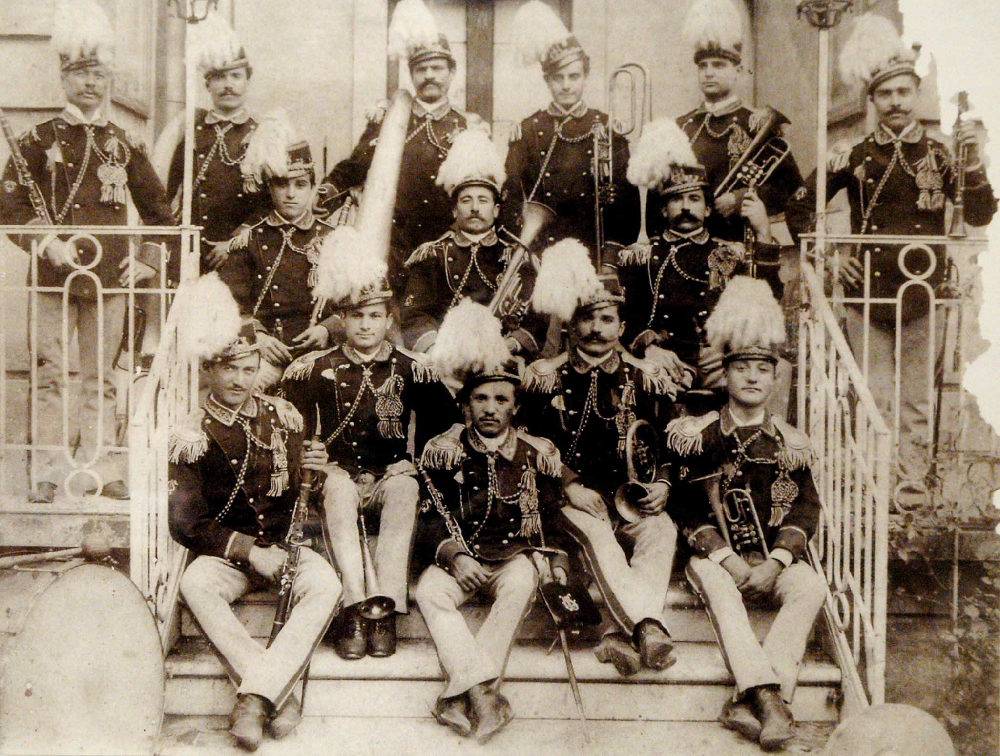
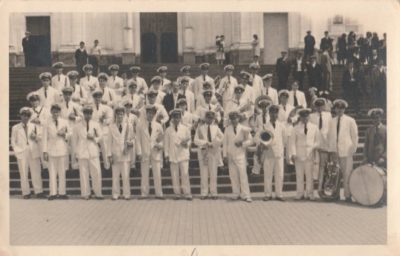
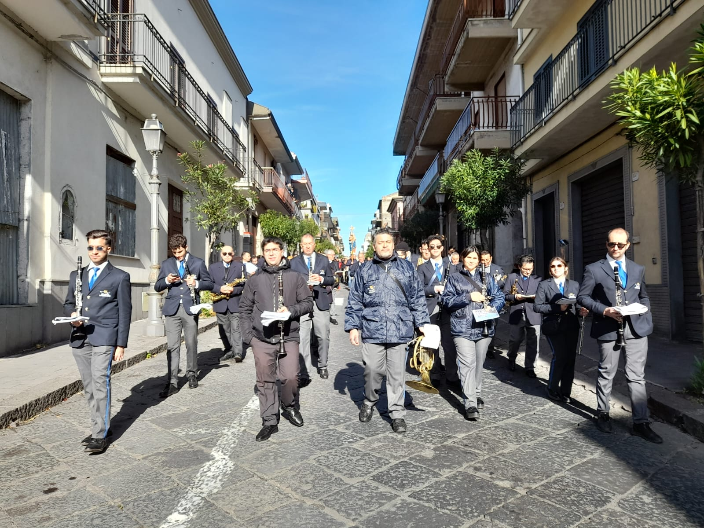

Nata oltre 100 anni fa, il Corpo Bandistico Città di Zafferana Etnea diretta dal Maestro Ignazio Coco offre un vasto repertorio che spazia dalla musica sinfonica alla più ricercata musica moderna . Il Gruppo si è sempre contraddistinto per l’ordine, la disciplina, l’impeccabile uniforme, l’amore per la musica oltre che per il vasto repertorio eseguito che comprende brani classici lirico sinfonici oltre a pagine del repertorio moderno. Attualmente l’organico orchestrale è composto da circa 40 elementi, la quasi totalità residenti nella nostra cittadina, di cui alcuni già in possesso di diploma di strumento.
Le origini del Corpo Bandistico città di Zafferana Etnea, con molta probabilità, si attribuiscono al 1826 anno di nascita del Comune, ma le prime notizie certe risalgono al 1896, quando l'allora M° Grasso diede vita alla formazione di un gruppo di allievi musicanti Agli inizi del 1900 il M° Vinci, d'accordo con l'amministrazione comunale dell'epoca, diede vita ad un "Corpo Bandistico Municipale" che rimase attivo fino al 1915. Con l'avvento della prima guerra mondiale, la banda si disciolse per riformarsi nel 1921 sotto la guida del M° Nicotra che la diresse fino al 1927 data in cui il Comune di Zafferana Etnea indette un concorso vinto dal valente M° Pignata.
La banda, sotto questa direzione acquisì grande prestigio. contando un complesso orchestrale di oltre 50 elementi, che fu per molti anni protagonista indiscussa nei più importanti centri delle Sicilia con un repertorio di grande valore musicale. Con l'avvento della seconda guerra mondiale, la banda fu nuovamente disciolta per riunificarsi nel 1947 quando l'Amministrazione Comunale incaricò il M° Giovanni Pennacchio a ricomporre il corpo bandistico. Il direttore riuscì a dare un impulso nuovo al gruppo, facendo si che la banda riconquistasse rapidamente il prestigio del passato. Nel 1948 un giovane allievo del M° Pennacchio, Giovanni Leonardi, cittadino di Zafferana Etnea, con l'autorizzazione dell'Amministrazione Comunale prese la direzione del corpo bandistico reggendolo per circa 30 anni riuscendo a dare una ulteriore svolta qualitativa, artistica e disciplinare, tale da diventare un riferimento per tutti i complessi bandistici del territorio
Nel 1979 il M° Giovanni Leonardi lasciò la direzione e il Comune incarico al M° Giuseppe Marletta, all'epoca prima tromba del teatro Massimo Bellini di Catania nonché docente all'istituto musicale Vincenzo Bellini della stessa città, il quale diresse la banda fino ai primi anni 80. Da allora, fino al 1984 il Corpo Bandistico di Zafferana Etnea si avvalse della guida del M° Carmelo Siracusa e successivamente del M° Edmondo Volzone figlio d'arte che per un ventennio ha diretto con eccezionale bravura, riuscendo a dare prestigio al corpo bandistico. Dal 28 Dicembre 2004 è direttore del Corpo Bandistico città di Zafferana Etnea, il giovane M° Davide Di Vendra, anch'esso figlio d'arte, musicista serio e professionale che con entusiasmo prosegue l'attività di coloro che hanno contribuito a far grande la Banda.
